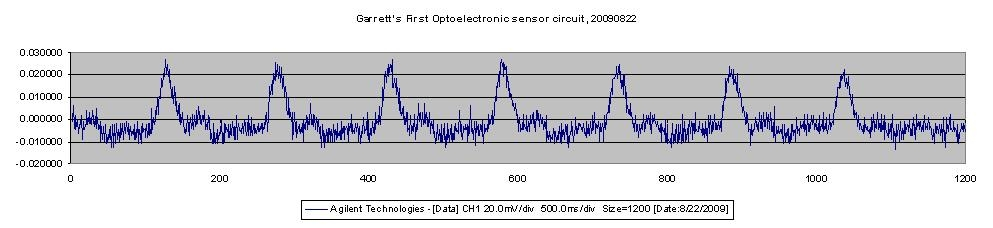

<!DOCTYPE HTML PUBLIC "-//W3C//DTD HTML 4.01 Transitional//EN">
<html><head>


<meta content="text/html;charset=ISO-8859-1" http-equiv="Content-Type"><title>OptoElectronic Sensor, Phoenix Project team</title></head><body style="background-color: rgb(255, 255, 255);">

<div class="Section1">
<blockquote style="margin-top: 5pt; margin-bottom: 5pt;">
  <h2 style="text-align: center;"><a name="mozTocId861890"></a></h2>

  <h2>
  <center><st1:city><st1:place><span style="color: rgb(0, 153, 0);"><font color="#009900">Phoenix</font></span></st1:place></st1:city><span style="color: rgb(0, 153, 0);"><font color="#009900">
Ambulatory Blood Pressure Monitor Project<br>

  <u>Sub-project: </u></font></span><span style="color: rgb(0, 153, 0); text-decoration: underline;" editable="true" id="SubprojectName">OptoElectronic Sensor, Phoenix Project team</span></center>

  </h2>

  <h3>Project
Description</h3>

  <p>The
purposes of the OptoElectronic Sensor project are&nbsp;to develop a pair of opto-electronic sensors that&nbsp;</p><ul><li>produce a signal that shows the pulse wave clearly enough to use on the Data Acquisition Prototype, and</li><li>can be used to test the usefulness of the Chen patent.</li></ul><br><h3>Project Deliverables</h3>Sensors, Detection circuit, Amplification circuit, Filter circuit<span style="font-weight: bold;"></span><h3>Project Report</h3>In the first phase, we are building a simple circuit based on <br><ul><li>Optek Technology OP140A GaAs Plastic Infrared Emitting Diode (<a href="http://www.optekinc.com/datasheets/OP140.PDF">Spec Sheet at http://www.optekinc.com/datasheets/OP140.PDF</a>) </li><li>Optek Technology OP550A Silicon Phototransistor (<a href="http://www.optekinc.com/datasheets/OP550A.pdf">Spec Sheet at http://www.optekinc.com/datasheets/OP550A.pdf</a>) and</li><li>the schematic on p. 22 of this paper:&nbsp;<a href="http://dspace.mit.edu/handle/1721.1/33121">http://dspace.mit.edu/handle/1721.1/33121</a>&nbsp;(also at&nbsp;<a href="http://hdl.handle.net/1721.1/33121">http://hdl.handle.net/1721.1/33121</a>, download the&nbsp; paper at <a href="http://dspace.mit.edu/bitstream/handle/1721.1/33121/62239232.pdf?sequence=1">http://dspace.mit.edu/bitstream/handle/1721.1/33121/62239232.pdf?sequence=1</a>)</li>
</ul>The first attempt to record a pulse wave from a lab member's finger looks like the following:<br><br><br>This
image appears to show systole and the dicrotic notch, but not
diastole.&nbsp; The signal is being captured raw with a digital
oscilloscope and
has no amplification or filtering applied. &nbsp;We have yet to
experiment with placing the sensor on wrist or arm, or look at any
software signal processing.<br><h3>Lab Notes</h3><a href="20091121LabNotes.html">20091121</a><h3><br>
</h3>
  <h3>Work in 2011</h3>
A new PCB was designed, with the intent of being more stable than the
original breadboard circuit and solid connectors for the sensors.&nbsp;
  <br>
  <a href="BOM_IR_circ1_digikey.xlsx">Bill Of Materials</a><br>
  <a href="Schematic_Opt_IR_110910.xps">Schematic</a><br>
  <a href="Layout_Opt_IR_110910.xps">PCB Layout</a><br>
  <a href="IR_Circ_summary.zip">Design Files</a><br>
  <br>
  <h3><br>
  </h3>
  <h3>Volunteers Are Needed</h3>


  <p>Would
you like to work on any part of this project? &nbsp;Envision a
prototype, propose a way to implement it, and
send
your suggestion
to <a href="mailto:labeaty@ieee.org?Subject=Data_Acquisition_Device_Prototype">Larry</a>. &nbsp;Or start out by just asking questions.<br>

  </p>

  <h3><a name="mozTocId667544"></a><font face="Times New Roman">About
This Page</font></h3>

  <p>This page is maintained by <a href="mailto:labeaty@ieee.org?Subject=Data_Acquisition_Device_Prototype">Larry
A. Beaty</a>. &nbsp;It was last updated on 28 January 2012.</p>

  <p>The author(s) provide this information as a public service,
and agree to place any novel and useful inventions disclosed herein
into the public domain. They are not aware that this material
infringes on the patent, copyright, trademark or trade secret
rights of others. However, there is a possibility that such
infringement
may exist without their knowledge. The user assumes all responsibility
for determining if this information infringes on the intellectual
property rights of others before applying it to products or services.</p>

  <p>(C) 2011 Larry A. Beaty, Garrett Heidorn. Copying and distribution of this
page
is permitted in any medium, provided this notice is preserved.</p>

  <p></p>

  <center><a href="/hyde/">Back to the Phoenix
Home Page</a></center>

  <p></p>

  <p>&nbsp;</p>

</blockquote>

</div>

</body></html>